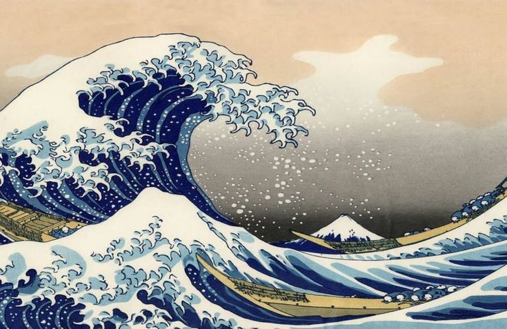
Hokusai: The Breaking Wave off Kanagawa
The Breaking Wave off Kanagawa, woodblock colour print by Hokusai, from the series Thirty-six Views of Mount Fuji, 1826–33.
The Great Wave off Kanagawa by Katsushika Hokusai (1760-1849) is undoubtedly one of the most famous works of Japanese art. It is no coincidence that the theme of this much-loved woodblock print is the formidable power of nature, and that it contains the majestic Mount Fuji. Nature, and specifically mountains, have been a favourite subject of Japanese art since its earliest days. Before Buddhism was introduced from China in the 6th century, Shinto was the exclusive faith of the Japanese people. At its core, Shinto is the reverence for the kami, or deities, who are believed to reside in natural features, such as trees, rivers, rocks, and mountains
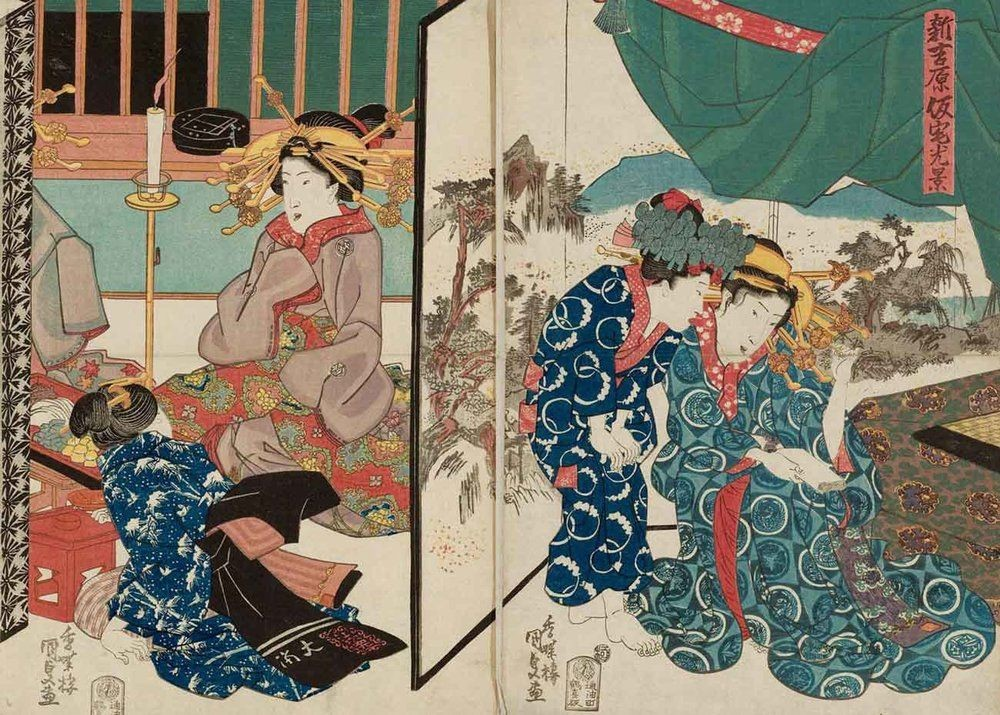
kunisada: Scene of the Temporary Quarters of the New Yoshiwara
Scene of the Temporary Quarters of the New Yoshiwara, Woodblock Print by Utagawa Kunisada, 1830
One of the most important purposes of ukiyo-e was to reflect the stylish lifestyles of the Edo urbanites. Merchants were confined to their social status by law and as a result, those with means spent their time in pursuit of pleasure and luxury, such as could be found at the Yoshiwara brothel. Yoshiwara was a well-known social club that was more than just a brothel; it was a cultural hub for the rich and connected men of the Edo era.
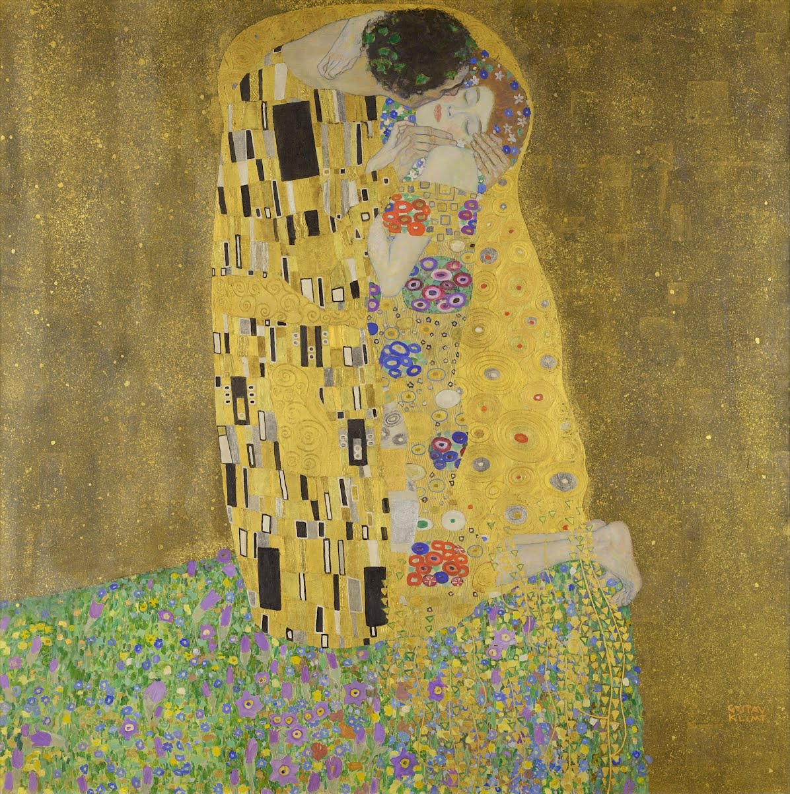
Klimt: Kiss
Gustav Klimt 1908-1909
The Kiss (in German Der Kuss) is an oil-on-canvas painting with added gold leaf, silver and platinum by the Austrian Symbolist painter Gustav Klimt. It was painted at some point in 1907 and 1908, during the height of what scholars call his "Golden Period". It was exhibited in 1908 under the title Liebespaar (the lovers) as stated in the catalogue of the exhibition. The painting depicts a couple embracing each other, their bodies entwined in elaborate beautiful robes decorated in a style influenced by the contemporary Art Nouveau style and the organic forms of the earlier Arts and Crafts movement.

Da Vinci: The Mona Lisa
Leonardo Da Vinci c. 1503–1506, perhaps continuing until c. 1517
Considered an archetypal masterpiece of the Italian Renaissance, it has been described as "the best known, the most visited, the most written about, the most sung about, the most parodied work of art in the world". The painting's novel qualities include the subject's enigmatic expression, monumentality of the composition, the subtle modelling of forms, and the atmospheric illusionism. The painting has been definitively identified to depict Italian noblewoman Lisa del Giocondo. It is painted in oil on a white Lombardy poplar panel. Leonardo never gave the painting to the Giocondo family, and it is believed he later left it in his will to his favored apprentice Salaì. It was believed to have been painted between 1503 and 1506; however, Leonardo may have continued working on it as late as 1517. It was acquired by King Francis I of France and is now the property of the French Republic. It has been on permanent display at the Louvre in Paris since 1797.
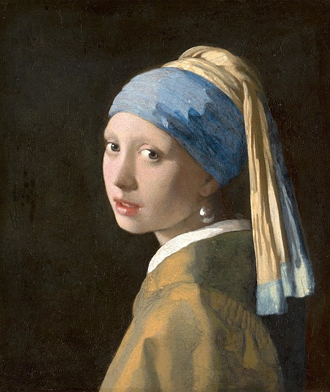
Vermeer: Girl with a Pearl Earing
Johannes Vermeer c. 1665
The painting is a tronie, the Dutch 17th-century description of a "head" that was not meant to be a portrait. It depicts a European girl wearing "exotic dress", an "oriental turban", and what appears to be a very large pearl as an earring. In 2014, Dutch astrophysicist Vincent Icke raised doubts about the material of the earring and argued that it looks more like polished tin than pearl on the grounds of the specular reflection, the pear shape and the large size of the earring. The work is oil on canvas and is 44.5 cm (17.5 in) high and 39 cm (15 in) wide. It is signed "IVMeer" but not dated. It is estimated to have been painted around 1665. After the most recent restoration of the painting in 1994, the subtle colour scheme and the intimacy of the girl's gaze toward the viewer have been greatly enhanced. During the restoration, it was discovered that the dark background, today somewhat mottled, was originally a deep enamel-like green. This effect was produced by applying a thin transparent layer of paint—a glaze—over the black background seen now. However, the two organic pigments of the green glaze, indigo and weld, have faded.
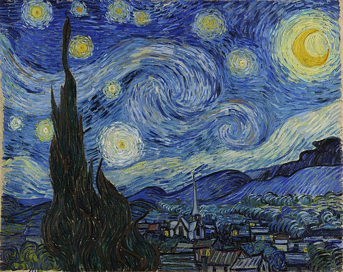
Gogh: Starry Nights
Vincent Van Gogh 1889
The Starry Night (Dutch: De sterrennacht) is an oil-on-canvas painting by the Dutch Post-Impressionist painter Vincent van Gogh. Painted in June 1889, it depicts the view from the east-facing window of his asylum room at Saint-Rémy-de-Provence, just before sunrise, with the addition of an imaginary village. It has been in the permanent collection of the Museum of Modern Art in New York City since 1941, acquired through the Lillie P. Bliss Bequest. Widely regarded as Van Gogh's magnum opus, The Starry Night is one of the most recognizable paintings in Western art.
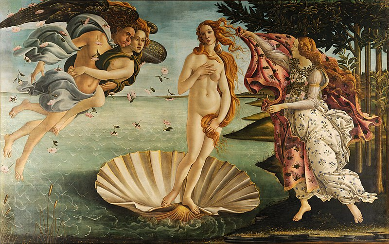
Botticelli: The Birth of Venus
Sandro Botticelli mid 1480s
The Birth of Venus (Italian: Nascita di Venere [ˈnaʃʃita di ˈvɛːnere]) is a painting by the Italian artist Sandro Botticelli, probably executed in the mid 1480s. It depicts the goddess Venus arriving at the shore after her birth, when she had emerged from the sea fully-grown (called Venus Anadyomene and often depicted in art). The painting is in the Uffizi Gallery in Florence, Italy. As depictions of subjects from classical mythology on a very large scale they were virtually unprecedented in Western art since classical antiquity, as was the size and prominence of a nude female figure in the Birth. It used to be thought that they were both commissioned by the same member of the Medici family, but this is now uncertain.
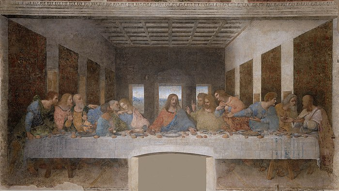
Da Vinci: The Last Supper
Leonardo Da Vinci c. 1495–1498
The Last Supper (Italian: Il Cenacolo [il tʃeˈnaːkolo] or L'Ultima Cena [ˈlultima ˈtʃeːna]) is a mural painting by the Italian High Renaissance artist Leonardo da Vinci, dated to c. 1495–1498. The painting represents the scene of the Last Supper of Jesus with the Twelve Apostles, as it is told in the Gospel of John – specifically the moment after Jesus announces that one of his apostles will betray him. Its handling of space, mastery of perspective, treatment of motion and complex display of human emotion has made it one of the Western world's most recognizable paintings and among Leonardo's most celebrated works. Some commentators consider it pivotal in inaugurating the transition into what is now termed the High Renaissance.
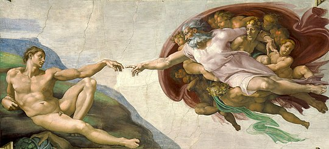
Michelangelo: The Creation of Adam
Michelangelo c. 1512
The Creation of Adam (Italian: Creazione di Adamo) is a fresco painting by Italian artist Michelangelo, which forms part of the Sistine Chapel's ceiling, painted c. 1508–1512. It illustrates the Biblical creation narrative from the Book of Genesis in which God gives life to Adam, the first man. The fresco is part of a complex iconographic scheme and is chronologically the fourth in the series of panels depicting episodes from Genesis. The painting has been reproduced in countless imitations and parodies. Michelangelo's Creation of Adam is one of the most replicated religious paintings of all time.

Monet: Impression
Claude Monet 1872
Impression, Sunrise (French: Impression, soleil levant) is an 1872 painting by Claude Monet first shown at what would become known as the "Exhibition of the Impressionists" in Paris in April, 1874. The painting is credited with inspiring the name of the Impressionist movement. Impression, Sunrise depicts the port of Le Havre, Monet's hometown. It is now displayed at the Musée Marmottan Monet in Paris.
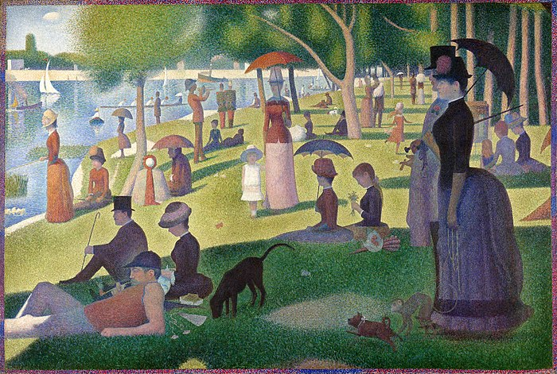
Seurat: A Sunday Afternoon on the Island of La Grande Jatte
Georges Seurat 1884–1886
A Sunday Afternoon on the Island of La Grande Jatte (French: Un dimanche après-midi à l'Île de la Grande Jatte) was painted from 1884 to 1886 and is Georges Seurat's most famous work. A leading example of pointillist technique, executed on a large canvas, it is a founding work of the neo-impressionist movement. Seurat's composition includes a number of Parisians at a park on the banks of the River Seine. It is in the collection of the Art Institute of Chicago.
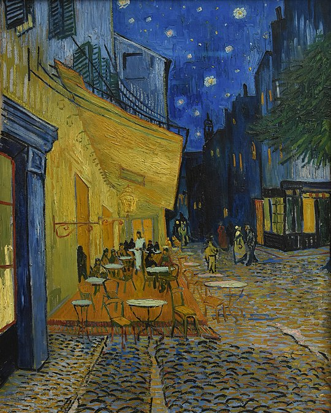
Gogh: Café Terrace at Night
Vincent Van Gogh 1888
Café Terrace at Night is an 1888 oil painting by the Dutch artist Vincent van Gogh. It is also known as The Cafe Terrace on the Place du Forum, and, when first exhibited in 1891, was entitled Coffeehouse, in the evening (Café, le soir). Van Gogh painted Café Terrace at Night in Arles, France, in mid-September 1888. The painting is not signed, but described and mentioned by the artist in three letters.[1] Visitors to the site can stand at the north eastern corner of the Place du Forum, where the artist set up his easel. The site was refurbished in 1990 and 1991 to replicate van Gogh's painting. He looked south towards the artificially lit terrace of the popular coffee house, as well as into the enforced darkness of the rue du Palais which led up to a building structure (to the left, not pictured) and, beyond this structure, the tower of a former church which is now Musée Lapidaire. Towards the right, Van Gogh indicated a lighted shop and some branches of the trees surrounding the place, but he omitted the remainders of the Roman monuments just beside this little shop. The painting is currently at the Kröller-Müller Museum in Otterlo, Netherlands.
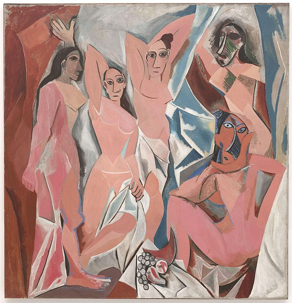
Picasso: Les Demoiselles d'Avignon
Pablo Picasso 1907
Les Demoiselles d'Avignon (The Young Ladies of Avignon, originally titled The Brothel of Avignon) is a large oil painting created in 1907 by the Spanish artist Pablo Picasso. Part of the permanent collection of the Museum of Modern Art in New York, it portrays five nude female prostitutes in a brothel on Carrer d'Avinyó, a street in Barcelona, Spain. Each figure is depicted in a disconcerting confrontational manner and none is conventionally feminine. The women appear slightly menacing and are rendered with angular and disjointed body shapes. The far left figure exhibits facial features and dress of Egyptian or southern Asian style. The two adjacent figures are shown in the Iberian style of Picasso's native Spain, while the two on the right are shown with African mask-like features. The ethnic primitivism evoked in these masks, according to Picasso, moved him to "liberate an utterly original artistic style of compelling, even savage force. In this adaptation of primitivism and abandonment of perspective in favor of a flat, two-dimensional picture plane, Picasso makes a radical departure from traditional European painting. This proto-cubist work is widely considered to be seminal in the early development of cubism and modern art. Les Demoiselles was revolutionary, controversial and led to widespread anger and disagreement, even amongst the painter's closest associates and friends. Henri Matisse considered the work something of a bad joke yet indirectly reacted to it in his 1908 Bathers with a Turtle. Georges Braque too initially disliked the painting yet studied the work in great detail. His subsequent friendship and collaboration with Picasso led to the cubist revolution. Its resemblance to Cézanne's The Bathers, Paul Gauguin's statue Oviri and El Greco's Opening of the Fifth Seal has been widely discussed by later critics.